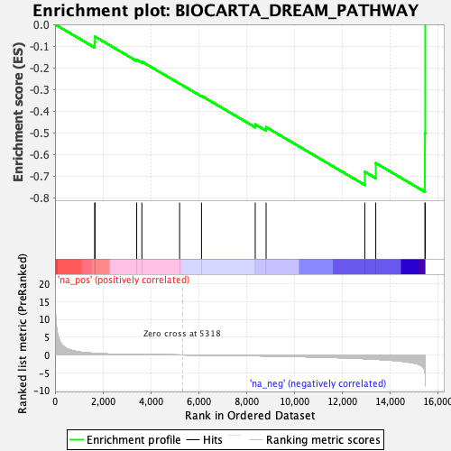
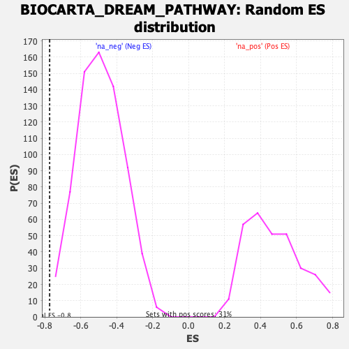

| | | Dataset | DE_genes |
| Phenotype | NoPhenotypeAvailable |
| Upregulated in class | na_neg |
| GeneSet | BIOCARTA_DREAM_PATHWAY |
| Enrichment Score (ES) | -0.77264374 |
| Normalized Enrichment Score (NES) | -1.5763668 |
| Nominal p-value | 0.0028776978 |
| FDR q-value | 0.07661457 |
| FWER p-Value | 0.62 |
Table: GSEA Results Summary

Fig 1: Enrichment plot: BIOCARTA_DREAM_PATHWAY
Profile of the Running ES Score & Positions of GeneSet Members on the Rank Ordered List
| PROBE | GENE SYMBOL | GENE_TITLE | RANK IN GENE LIST | RANK METRIC SCORE | RUNNING ES | CORE ENRICHMENT | | 1 | CREM | | | 1658 | 0.451 | -0.0814 | No |
| 2 | PRKACB | | | 1671 | 0.445 | -0.0566 | No |
| 3 | OPRK1 | | | 3413 | 0.106 | -0.1631 | No |
| 4 | CREB1 | | | 3629 | 0.091 | -0.1718 | No |
| 5 | PRKAR2B | | | 5206 | 0.006 | -0.2734 | No |
| 6 | PRKAR1A | | | 6121 | -0.048 | -0.3298 | No |
| 7 | PRKAR2A | | | 8366 | -0.236 | -0.4614 | No |
| 8 | KCNIP3 | | | 8819 | -0.288 | -0.4741 | No |
| 9 | MAPK3 | | | 12945 | -1.060 | -0.6801 | Yes |
| 10 | PRKAR1B | | | 13402 | -1.215 | -0.6398 | Yes |
| 11 | JUN | | | 15456 | -4.705 | -0.5025 | Yes |
| 12 | FOS | | | 15471 | -8.771 | -0.0000 | Yes |
Table: GSEA details [plain text format]

Fig 2: BIOCARTA_DREAM_PATHWAY: Random ES distribution
Gene set null distribution of ES for BIOCARTA_DREAM_PATHWAY